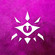
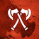
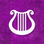

| clases | |||
|---|---|---|---|
| Clasificación | Símbolo | Nombre | Descripción |
| Conjuradores |  | Brujo | Los brujos son buscadores del conocimiento que se encuentra escondido en el multiverso. A través de pactos hechos con seres poderosos de poder sobrenatural, los brujos desatan efectos mágicos tanto sutiles como espectaculares y recolectan secretos arcanos para potenciar su propio poder. |
| Hechicero | Los hechiceros tienen una magia innata, conferida por una línea de sangre exótica, una influencia de otro mundo o la exposición a fuerzas cósmicas desconocidas. Uno no puede estudiar hechicería como quien estudia un lenguaje, más de lo que uno puede aprender a vivir una vida legendaria. Nadie elige la hechicería, el poder elige al hechicero. | ||
| Mago | Los magos son los practicantes supremos de la magia, definidos y unidos como una clase por los hechizos que conjuran. A partir de la sutil onda de la magia que impregna el cosmos, los magos lanzan explosivos hechizos de fuego, arcos voltaicos, sutiles engaños y brutales formas de control mental. | ||
| Combatientes | Guerrero | Todos los guerreros comparten un dominio magistral de las armas y armaduras, y un exhaustivo conocimiento de las habilidades del combate. Además, están muy relacionados con la muerte, tanto repartiéndola como mirándola fijamente, desafiantes. | |
|  | Barbaro | Para algunos, su rabia brota de la comunión con espíritus de animales salvajes. Otros recurren a su hirviente reserva de ira frente a un mundo lleno de dolor. Para los bárbaros, la furia es un poder que no sólo les proporciona un frenesí ciego en la batalla, sino también extraordinarios reflejos, resistencia y proezas de fuerza. | |
| Monje | Cualquiera que sea su disciplina, los monjes están unidos por su habilidad para utilizar mágicamente la energía que corre por sus cuerpos. Ya sea canalizada en una impactante demostración de proeza marcial o en el sutil enfoque en la habilidad defensiva y la velocidad, esta energía impulsa todo lo que el monje hace. | ||
| Oradores | Druida | Ya sea invocando a las fuerzas elementales o emulando a las criaturas del mundo animal, los druidas son la personificación de la resistencia, astucia y furia de la naturaleza. Dicen no tener un dominio sobre la naturaleza. En lugar de eso, se ven como una extensión de la voluntad indomable de la misma. | |
| Clerigo | Los clérigos son intermediarios entre el mundo mortal y los distantes planos divinos. Tan diferentes entre ellos como los dioses a los que sirven, los clérigos se esfuerzan por personificar las obras de sus deidades. No son sacerdotes ordinarios, un clérigo se encuentra imbuido de magia divina. | ||
| Paladin | Sean cuales sean sus orígenes y sus misiones, los paladines están unidos por sus juramentos para luchar en contra de las fuerzas del mal. El juramento de un paladín es un lazo muy poderoso. Es una fuente de poder que convierte a un devoto guerrero en un campeón bendecido. | ||
| Expertos | Explorador | Lejos del bullicio de las ciudades y pueblos, más allá de las defensas que mantienen a las granjas más lejanas protegidas de los terrores de la naturaleza, en medio de tupidos bosques sin caminos y a través de enormes y vacías llanuras, los exploradores mantienen su interminable guardia. | |
| Picaro | Los pícaros confían sus habilidades, el sigilo y las vulnerabilidades de sus oponentes para lograr sacar ventaja en cualquier situación. Tienen un don para encontrar la solución a prácticamente cualquier problema, demostrando un ingenio y versatilidad, que es la piedra angular de cualquier buen grupo de aventureros. | ||
|  | Bardo | Ya sea un erudito, un poeta o un canalla, un bardo teje su magia a través de sus palabras y su música para inspirar a los aliados, desmoralizar a los enemigos, manipular mentes, crear ilusiones e incluso sanar heridas. | |